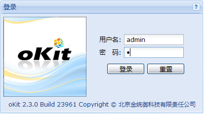
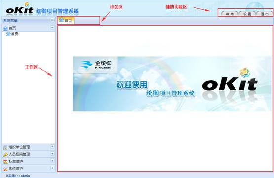

系统提供了默认超级用户，用户名为：admin，密码为：1，该用户只能登录到后台管理界面。为安全起见，建议用户登录后立即修改密码。系统登录界面如下图所示：

图 登陆界面
超级用户登录成功后进入系统后台管理页面，如图所示。系统后台管理页面分为系统菜单、标签区、辅助功能区、工作区、状态栏区。
1、系统菜单：分为首页、组织单位管理、人员权限管理、标准维护、系统维护五大部分，其中组织单位管理中包括单位管理、岗位管理；人员权限管理包括人员管理、角色管理；标准维护包括标准维护；系统维护包括日志管理。
2、标签区：显示已经打开的功能，可以选择关闭。
3、辅助功能区：有帮助、设置、退出三个按钮，它们的作用分别是：给用户提供帮助信息；用户登录后修改本人的登录密码以及下载需要的软件；退出登录。
4、工作区：根据系统菜单的选择，显示相应的功能操作界面。
5、状态栏区：显示当前登录用户。

图 后台管理界面